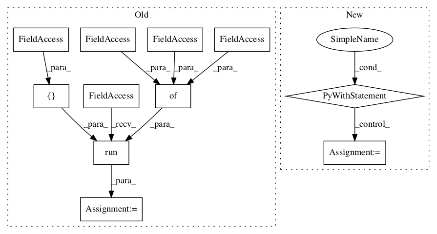

86ce5d52134a56806112ff8664e4034338e0e05a,yarll/agents/ppo/ppo.py,PPO,learn,#PPO#,208

Before Change
batch_actions = np.array(actions)[batch_indices]
batch_advs = np.array(advs)[batch_indices]
batch_rs = np.array(rs)[batch_indices]
fetches = [self.train_op]
if (n_updates % 1000) == 0:
fetches.append(self.model_summary_op)
feed_dict = {
self.states: batch_states,
self.old_network.states: batch_states,
self.actions_taken: batch_actions,
self.old_network.actions_taken: batch_actions,
self.advantage: batch_advs,
self.ret: batch_rs
}
results = self.session.run(fetches, feed_dict)
if (n_updates % 1000) == 0:
self.writer.add_summary(results[-1], n_updates)
n_updates += 1
self.writer.flush()
After Change
Run learning algorithm
config = self.config
n_updates = 0
with self.writer.as_default():
for _ in range(int(config["n_iter"])):
// Collect trajectories until we get timesteps_per_batch total timesteps
states, actions, advs, rs, _ = self.get_processed_trajectories()
advs = np.array(advs)
advs = (advs - advs.mean()) / advs.std()
self.set_old_to_new()
indices = np.arange(len(states))
for _ in range(int(self.config["n_epochs"])):
np.random.shuffle(indices)
batch_size = int(self.config["batch_size"])
for j in range(0, len(states), batch_size):
batch_indices = indices[j:(j + batch_size)]
batch_states = np.array(states)[batch_indices]
batch_actions = np.array(actions)[batch_indices]
batch_advs = np.array(advs)[batch_indices]
batch_rs = np.array(rs)[batch_indices]
train_actor_loss, train_critic_loss, train_loss = self.train(batch_states,
batch_actions,
batch_advs,
batch_rs)
tf.summary.scalar("model/loss", train_loss, step=n_updates)
tf.summary.scalar("model/actor_loss", train_actor_loss, step=n_updates)
tf.summary.scalar("model/critic_loss", train_critic_loss, step=n_updates)
n_updates += 1
if self.config["save_model"]:
tf.saved_model.save(self.ac_net, os.path.join(self.monitor_path, "model"))
class PPODiscrete(PPO):
def build_networks(self) -> ActorCriticNetwork:
return ActorCriticNetworkDiscrete(
self.env.action_space.n,
In pattern: SUPERPATTERN
Frequency: 3
Non-data size: 11
Instances
Project Name: arnomoonens/yarll
Commit Name: 86ce5d52134a56806112ff8664e4034338e0e05a
Time:
Author: null
File Name: yarll/agents/ppo/ppo.py
Class Name: PPO
Method Name: learn
Project Name: tensorlayer/tensorlayer
Commit Name: 641a28fbf0daff0ad1ad0f43d2c4b545cb6f9656
Time:
Author: null
File Name: examples/reinforcement_learning/tutorial_cartpole_ac.py
Class Name: Critic
Method Name: learn
Project Name: tensorlayer/tensorlayer
Commit Name: 641a28fbf0daff0ad1ad0f43d2c4b545cb6f9656
Time:
Author: null
File Name: examples/reinforcement_learning/tutorial_cartpole_ac.py
Class Name: Actor
Method Name: learn